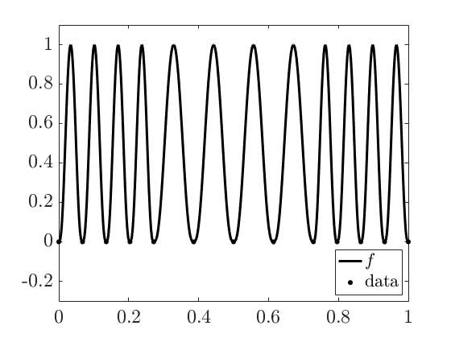

Integrate a spiky function using integral_g
Authors: Fred Hickernell and Sou-Cheng Choi, August 2017
Contents
Function definition
This example is taken from [1], where a function is defined on with twelve spikes.
close all; clear all; format compact; format short e; [~,~,MATLABVERSION] = GAILstart(false); xquad = 0.13579; %number used by quad to split interval into three parts xleft = [0 xquad/2 xquad 3*xquad/2 2*xquad]; xctr = [2*xquad 1/4+xquad 1/2 3/4-xquad 1-2*xquad]; xrght = [1-2*xquad 1-3*xquad/2 1-xquad 1-xquad/2 1]; xall = [xleft xctr(2:5) xrght(2:5)]'; nnode = length(xall); fbump = @(x) 4^3*((x.*(1-x)).^3).*((x>=0)&(x<=1)); %one bump xplot = (0:0.002:1)'; %points to plot spikyfun = @(x) foolfunmaker(x, @(x,c) fbump((x-c(1))/c(2)),... ones(nnode-1,1), [xall(1:nnode-1) diff(xall)]);
Plot of the spiky function
In the following, we plot and show the data sampling points picked by MATLAB's built-in integration function quad, which explains why quad essentially gives the answer zero for our spiky function:
figure; h = plot(xplot,spikyfun(xplot), 'k-', xall, zeros(nnode,1), 'k.'); axis([0 1 -0.3 1.1]) set(gca,'Ytick',-0.2:0.2:1) legend(h,{'$f$','data'},'location','southeast')
Integral approximation
We use MATLAB built-in functions and integral_g [2] from GAIL [3] to integrate over the unit interval:
a = 0; b = 1; abstol = 1e-11; if MATLABVERSION >= 8, MATintegralspiky = integral(spikyfun,a,b,'AbsTol',abstol) end MATquadspiky = quad(spikyfun,a,b,abstol) MATgailspiky = integral_g(spikyfun,a,b,abstol)
MATintegralspiky = 4.5714e-01 MATquadspiky = 2.7021e-44 Warning: This integrand is spiky relative to ninit. You may wish to increase ninit for similar integrands. MATgailspiky = 4.5714e-01
Compute approximation errors
The true integral value of the spiky function is . The following code computes absolute errors from the above approximation methods. Only integral_g achieves the required accuracy with respect to the absolute tolerance of in this example.
integralspiky = 16/35; if MATLABVERSION >= 8, abs_errors = abs(integralspiky - [MATintegralspiky, MATquadspiky, MATgailspiky]) else abs_errors = abs(integralspiky - [MATquadspiky, MATgailspiky]) end if_meet_abstol = (abs_errors < abstol)
abs_errors = 6.1854e-10 4.5714e-01 5.7065e-14 if_meet_abstol = 1×3 logical array 0 0 1
References
[1] Nick Clancy, Yuhan Ding, Caleb Hamilton, Fred J. Hickernell, and Yizhi Zhang, "The Cost of Deterministic, Adaptive, Automatic Algorithms: Cones, Not Balls," Journal of Complexity 30, pp. 21-45, 2014.
[2] Sou-Cheng T. Choi, Yuhan Ding, Fred J. Hickernell, Lan Jiang, Lluis Antoni Jimenez Rugama, Da Li, Jagadeeswaran Rathinavel, Xin Tong, Kan Zhang, Yizhi Zhang, and Xuan Zhou, GAIL: Guaranteed Automatic Integration Library (Version 2.3.1) [MATLAB Software], 2020. Available from http://gailgithub.github.io/GAIL_Dev/